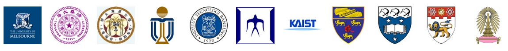
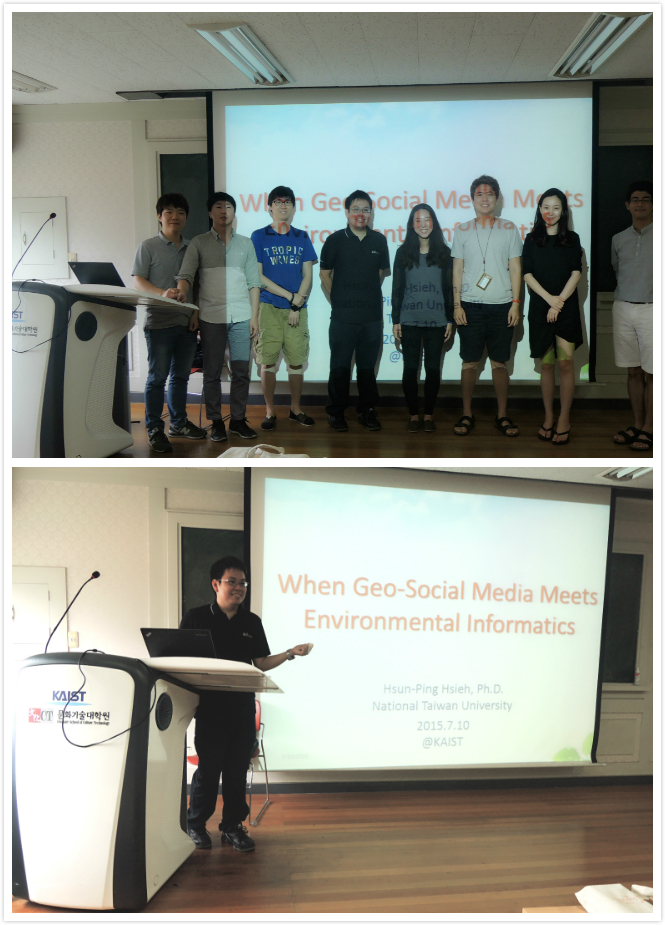
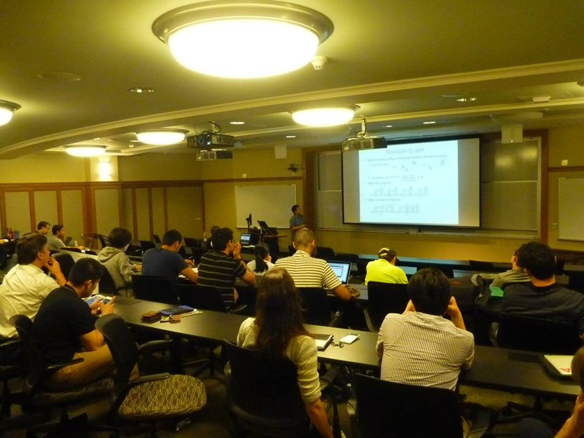

Main Experience & Education
- 2023.8 - now Director of Electrical Laboratories, Electrical Engineering Department, National Cheng Kung University
- 2022.8 - now Professor, Electrical Engineering Department, National Cheng Kung University
- 2019.8 - 2022.7 Associate Professor, Electrical Engineering Department, National Cheng Kung University
- 2016.8 - 2019.7 Assistant Professor, Electrical Engineering Department, National Cheng Kung University
- 2015 - 2016 Mandatory Military Service, Air Force Institute of Technology
- 2015 Visiting Scholar, Graduate School of Culture Technology, Korea Advanced Institute of Science and Technology(KAIST)
- 2013 Research Intern of Microsoft City Next, Microsoft Research
- 2009 - 2015 Ph.D. in Computer Science, Graduate Institute of Networking and Multimedia,National Taiwan University
- 2007 - 2009 M.S. in Management, Information Management, National Taiwan University
- 2003 - 2007 B.S. in Management, Information Management, National Central University
Awards and Honors
- MediaTek Social Innovation Special Award 2023.聯發科技數位社會創新特別獎,2023
- 2023 AI Most Influential Scholar Honorable Mention in Data Mining, AMiner, 2023. 2023全球人工智慧(資料探勘領域)最具影響力百大學者
- Top-10 Outstanding Youth Award winners of Taiwan, 2023. 中華民國112年救國團青年獎章(與臺北市長蔣萬安同獲)
- Outstanding Thesis Award, Taiwan Institute of Information & Computing Machinery (IICM), 2023.中華民國資訊學會碩士論文佳作獎,2023
- SDGs Best Paper Award, Taiwan Institute for Sustainable Energy, 2023.台灣永續能源研究基金會SDGs最佳論文獎,2023
- 16th TSC Outstanding Thesis Award 2023. 指導碩士生榮獲2023年第十六屆崇越論文大賞碩士組-優等論文獎,2023
- K. T. Li Researcher Award, 2023. 2023成功大學李國鼎科技與人文講座-李國鼎研究獎
- 2022 K. T. Li Young Researcher Award, 2023. 李國鼎科技發展基金會-李國鼎青年研究獎
- My lead SOA platform won two honors, the "The Fifth Government Service Award" and the "2022 International Standard Distinguished Project Award" for Tainan City. 擔任台南市SOA服務平台整體規劃之顧問，該SOA平台獲得榮獲「第五屆政府服務獎」與「2022國際標竿專案奬」兩項殊榮。
- 2022 AI Most Influential Scholar Honorable Mention in Data Mining, AMiner, 2022. 2022全球人工智慧(資料探勘領域)最具影響力百大學者
- Taiwan Comprehensive University System Young Scholars' Innovative R&D Results Selection- Masterpiece award, 2022. 臺灣綜合大學系統年輕學者創新研發成果選拔佳作獎
- Outstanding Young Professional Award, Taiwan Consumer Electronics Society, 2022. 中華民國消費電子學會 傑出青年獎
- ITS Taiwan Award of Intelligent Transportation Society of Taiwan (ITS Taiwan), 2022. 中華智慧運輸協會 2022年智慧運輸獎
- Excellent Teaching Award for University Innovation and University Social Responsibility, National Cheng Kung University, 2022.獲國立成功大學110學年度教學創新與大學社會責任特優教師(全校共2位教師獲獎)
- The supervised student, Mr. Fandel Lin won the scholarship of Pilot Project Scholarships for Taiwanese Studying in the Focused Field at Top Foreign Universities. 指導碩士生林寰鐸榮獲教育部高教司110-111年臺灣重點領域獎學金（每年9.2萬美金獎助赴美讀博，共四年）
- Best Thesis Award, Taiwan Geographic Information Society, 2022. 指導碩士生榮獲2022 「台灣地理資訊學會」金圖獎-碩士論文獎
- Best Thesis Award, Taiwan Institute of Information & Computing Machinery (IICM), 2022. 指導碩士生獲中華民國資訊學會碩士論文優等獎
- Supervised student won Technology Scholarship of Foxconn Education Foundation, 2022. 指導碩士生獲鴻海科技獎(得獎者有史丹佛與MIT之博士生)
- ACM Student Research Competition of SIGSPATIAL 2021 Best Paper Winner, 2021. 指導碩士生獲ACM SIGSPATIAL SRC學生研究競賽冠軍(碩博混合研究大賽)
- Best Product Award of National Brand Yushan 移植至永豐銀行之產學計畫技術轉移獲2021第18屆國家品牌玉山獎（最佳產品類)
- Young Thesis Award, The Chinese Institute of Electrical Engineering. 指導碩士生榮獲中國電機工程學會 青年論文獎,2021
- Our team won the 26th the International ICT Innovative Services Awards(Second place). 指導學生獲全國大專校院資訊應用服務創新競賽-商業應用組第二名,2021
- IEEE Tainan Section Best Master Thesis Award. 指導碩士生榮獲IEEE Tainan Section 最佳碩士論文獎,2021
- Young Thesis Award, The Chinese Institute of Electrical Engineering. 指導碩士生榮獲中國電機工程學會 青年論文獎,2021
- ITS Taiwan Award of Intelligent Transportation Society of Taiwan (ITS Taiwan), 2021. 獲中華智慧運輸協會 2021年智慧運輸獎
- Best Thesis Award of Taiwan Association for Web Intelligence Consortium (WIC). 指導碩士生榮獲台灣網路智能學會109年度最佳碩士論文獎,2021
- Best Paper Winner of ACM Student Research Competition in SIGSPATIAL 2021. 指導碩士生獲ACM Student Research Competition of SIGSPATIAL 2021 Best Paper Winner.
- Best Thesis Award of Taiwanese Association for Artificial Intelligence (TAAI). 指導碩士生榮獲中華民國人工智慧學會110年度碩博士論文獎最佳碩士論文獎
- 14th TSC Best Thesis Award 2021. 指導碩士生榮獲2021年第十四屆崇越論文大賞碩士組-特優論文獎,2021(4/938)
- Best Thesis Award,Taiwan Information Storage Association 2021. 指導碩士生榮獲2021年台灣資訊儲存技術協會最佳碩士論文獎,2021(4/938)
- Outstanding Youth of Taiwan(Tainan's Representative) 2021. 110年度臺灣社會優秀青年(臺南市代表),2021
- Award of Excellent Young EE Engineer, The Chinese Institute Of Electrical Engineering 中國電機工程學會 優秀青年電機工程師獎, 2021
- Award of Excellent EE Engineer, The Chinese Institute Of Electrical Engineering 中國電機工程學會(高雄分會) 優秀電機工程師獎, 2021
- Outstanding Teaching Award for University Innovation and University Social Responsibility, National Cheng Kung University. 榮獲109學年度"大學創新與大學社會責任"特優教師,2021
- Outstanding Teaching Award, National Cheng Kung University. 榮獲109學年度電機資訊學院教學優良教師,2021
- ACM ICMR 2021 Embedded Deep Learning Object Detection Model Compression Competition for Traffic in Asian Countries – 3rd Place (3rd/308), ACM ICMR 2021 國際會議交通物件辨識競賽第三名, 2021
- Bronze Award of 2021 Digital Twin Solutions for Smart Farming Competition 指導學生獲2021智慧農業數位分身創新應用競賽銅獎
- MediaTek Social Innovation Special Award 2020.聯發科技數位社會創新特別獎,2020
- Our paper accepted by ACM SIGSPATIAL 2020 wins the 1st runner-up place of ACM Student Research Competition in SIGSPATIAL 2020. 指導學生獲得SIGSPATIAL 2020國際電腦學會學生論文競賽第二名
- Our team won the 25th the International ICT Innovative Services Awards(Award for Excellent). 與指導學生共獲全國大專校院資訊應用服務創新競賽TGOS地圖協作應用組佳作
- Supervised student won IEEE CIS Conference Grant for Young Professionals and Graduate Students. 指導學生榮獲IEEE CIS會議研究生獎學金,2020
- Special Prize for Taiwan Big Data Analysis in smart manufacturing cpmpetition. 指導學生榮獲2020全國智慧製造大數據分析競賽特別獎(10萬元獎金),2020
- 2nd Place Winner, Competition of Application for Electronic Toll Collection in Traffic Management, Freeway Bureau, Ministry of Transportation and Communications. 指導學生參加交通部高速公路ETC 資料在交通管理之應用創意競賽第二名(15萬獎金), 2020
- Outstanding Teaching Award for University Innovation and University Social Responsibility, National Cheng Kung University. 榮獲108學年度"大學創新與大學社會責任"特優教師,2020
- Outstanding Teaching Award, EECS College,National Cheng Kung University. 榮獲108學年度電機資訊學院教學優良教師,2020
- MOST Young Scholar Fellowship, The Einstein Program, Taiwan. 獲科技部年輕學者榮譽名銜, 愛因斯坦培植計畫,2019
- Best Advisor Award, National Cheng Kung University.獲107學年度國立成功大學傑出輔導教師,2019
- Supervised students won 5th Place, AI CUP Artificial Intelligence Analysis and Classification of Thesis, Ministry of Education, Taiwan. 指導學生參加教育部全國大專校院人工智慧競賽(AI CUP-人工智慧論文分類)佳作,2019 (
- Won 2nd Place, ACM Student Research Competition Grand Final, ACM Award Banquet, 2019. 指導學生參加全球計算機電腦學會學生研究競賽世界第二名(往年得獎者均為美國名校CMU, UC Berkeley,...UIUC學生),2018-2019
- Supervised students won Distinguished Honor Award, T-CAT Information Security Contest, Ministry of Science and Technology, Taiwan. 指導學生參加T貓盃全國資安基礎實務能力競賽特優,2019
- Supervised students won Outstanding Engineering Student Fellowship, Chinese Institute of Engineers, Taiwan. 指導學生獲得中國工程師學會優秀工程學生獎學金, 2019
- Supervisor of the third place Winner, Taiwan Open Source Software Competition, 2018. 指導學生參加2018全國大專校院開源軟體程式創意設計競賽榮獲季軍
- Our paper accepted by ACM SIGSPATIAL 2018 wins the 1st place of ACM Student Research Competition. 指導學生獲得國際電腦學會學生論文競賽第一名
- Supervisor of Quality Award Winner, Taiwan Summer of Code,TSoC 2018, 2018. 指導學生參加全國軟體達人創作營成果發表獲得優選
- Supervisor of Quality Award Winner, Urban Planning of Taipei Smart City, 2018. 指導學生參加2018臺北智慧生態社區設計競圖獲得優選(成員：郭于禎、廖紅雯、方婕瑀、王辰慧、蔡昀霓、陳冠霖)
- Champions in the competition of the Big Data Analytics for Smart Cities, Tainan City Government, 2018. 指導學生參加台南市政府舉辦107年「培養數據新視野 翻轉城市競爭力」成果競賽獲第一名與最佳人氣獎(學生成員：簡聖庭、鍾孟勳、洗鈺淇、陳宥丞、紀德欣)
- First runner-up in the competition of the Big Data Analytics for Smart Cities, Tainan City Government, 2018. 指導學生參加台南市政府舉辦107年「培養數據新視野 翻轉城市競爭力」成果競賽獲第二名(學生成員：陳昱忻、王秉民、張維倫、王儷媛、郭子瑛)
- Supervisor of Silver Medal Winner, Creative Software Applications Contest Award, 2018. (指導學生獲得2018全國大專校院軟體創作競賽銀牌，學生成員：方婕瑀、林寰鐸、簡聖庭、陳思妤)
- Observational Research Award, Pan Wen Yuan Foundation, Taiwan, 2018(潘文淵文教基金會考察研究獎)
- Supervisor of Honorable mention winner, Big Data Competition for Smart Grid, 2017. (指導學生獲經濟部能源局低壓智慧電表大數據分析競賽佳作，學生成員：陳柏豪、陳人豪、王儷媛...等)
- Air Force Outstanding Soldiers, Republic of China Air Force, 2016. (中華民國空軍優秀義務役士兵)
- Best Ph.D. Dissertation Award, Taiwan Geographic Information Society, 2016. (中華民國地理資訊學會金圖獎)
- Best Ph.D. Dissertation Award, Taiwan Institute of Information & Computing Machinery(IICM), 2016. (中華民國資訊學會最佳博士論文獎)
- Best Ph.D. Dissertation Award, Taiwanese Association for Artificial Intelligence(TAAI), 2015. (中華民國人工智慧學會最佳博士論文獎)
- Best Ph.D. Dissertation Runner-up Award, The Chinese Institute of Environmental Engineering, 2015. (中華民國環境工程學會博士論文獎第二名)
- Ph.D. Dissertation Award, Fuji Xerox Taiwan, 2016. (全錄(XEROX)文教基金會學術論文獎-優等)
- Best Ph.D. Thesis Award, Operations Research Society of Taiwan, 2015. (台灣作業研究學會最佳博士論文獎)
- Best Ph.D. Thesis Award, Taiwanese Association for Social Network, 2015. (台灣社會網絡學會最佳博士論文獎)
- Honorary Member of the Phi Tau Phi Scholastic Honor Society, 2015. (台灣斐陶斐榮譽會員)
- IJCAI 2015 Journal Track Honor. (for our TIST'14 paper)
- SIGIR 2015 Student Travel Award.
- AAAI Student Travel Award for ICWSM 2015.
- Young College Elite of 2015, Taiwan Youth Corps.(全國大專優秀青年,台灣青年救國團)
- Garmin Fellowship 2015.
- Advanced Semiconductor Engineering(ASE) Ph.D. Fellowship on Environment Engineering 2015. (日月光環保學術博士論文獎)
- IEEE Student Travel Award for ICDM 2014.
- Outstanding College Youth of National Taiwan University 2014. (臺灣大學優秀青年)個人簡介(in Chinese).
- Selected Taiwan Ph.D. Fellowship for Asia-Oceania Top University League on Engineering 2014. (年亞洲大洋洲頂尖大學工學院聯盟 台灣代表) link.

- ICWSM 2014 Tutorial Travel Award.
- ICWSM 2014 Student Travel Award.
- Garmin Fellowship 2014.
- Best Intern Award, Microsoft Research Asia.(Top 6% Interns)
- AAAI Student Travel Award for ICWSM 2012.
- ACM KDD Cup 2010 First Prize of All Teams, 2010.(Over 200 teams)
- ACM SIGGRAPH 2010 Student Research Competition Travel Award &
Best Student Poster Nomination.
- Third Place of 2009 Lexus Business Strategy Competition (Top 3 over five hundred teams).
- President Award , NTU, Taiwan, 2009.(Top 5% students)
- Outstanding Student Award , NCU, Taiwan, 2007.(one for each department)
- Top 3 Undergraduate Student Project, MIS, NCU, Taiwan, 2006.
- Outstanding Student Award , NCU, Taiwan, 2006.(one for each department)
- Best Undergraduate Award , NCU, Taiwan, 2006.(Top 5% students)
- Outstanding Student Award , NCU, Taiwan, 2005.(one for each department)
- Best Undergraduate Award , NCU, Taiwan, 2005.(Top 5% students)
- Best Undergraduate Award , NCU, Taiwan, 2004.(Top 5% students)
- Best Undergraduate Award , NCU, Taiwan, 2004.(Top 5% students)
- Best Undergraduate Award , NCU, Taiwan, 2003.(Top 5% students)
Professional Activities
- Program Committee, AAAI Conference on Artificial Intelligence 2018.
- Program Committee, The ACM International Conference on Web Search and Data Mining (WSDM) 2018.
- Publication Chair, Conference on Technologies and Applications of Artificial Intelligence 2017.
- Program Committee, ACM’s Special Interest Group on Knowledge Discovery and Data Mining (KDD) 2017.
- Program Committee, ACM CIKM 2017 International Conference on Information and Knowledge Management 2017.
- Program Committee, The International AAAI Conference on Web and Social Media (ICWSM) 2017.
- Program Committee, ACM’s Special Interest Group on Knowledge Discovery and Data Mining (KDD) 2016.
- Program Committee, The International AAAI Conference on Web and Social Media (ICWSM) 2016.
- Program Committee, ACM’s Special Interest Group on Knowledge Discovery and Data Mining (KDD) 2015.
- Program Committee, The International AAAI Conference on Web and Social Media (ICWSM) 2015.
- Program Committee, ASE BigData 2015.
- Program Committee, ASE SocialInformatics 2015.
Invited Talk
- Mining Geo-Social Media�for Urban Environment and Time-sensitive Recommendation. Alibaba(阿里巴巴，杭州北京連線) (2017/8)
- 智慧城市應用與未來發展，台南市政府 (2017/7)
- 智慧城市中的時空大數據應用，台灣資料科學年會 (2017/2)
- 空氣品質推估與預測，環保署 (2017/1)
- When Geo-Social Media Meets Environmental Informatics. Korea Advanced Institute of Science and Technology(KAIST) (2015/7)

- My BMW-style Ph.D. Days. Department of Management Information System, National Central University (2014/5)

- The Future Trend of Geo-Social Computing. The International Workshop on Data Mining in Social Networks, PAKDD 2014 (2014/5)

- Route Planning and Visualization Using Geo-Social Media Data. The 8TH International AAAI Conference on Weblogs and Social Media(ICWSM'14). Ann Arbor,MI 2014.

Reviewers
- Journal: IEEE Transactions on Signal Processing, IEEE Journal of Transactions on Knowledge and Data Engineering, ACM Transactions on Intelligent Systems and Technology, Geographical Information Systems, Journal of Distributed and Parallel Databases, Journal of Information Science and Engineering.
- Conference: ACM CIKM 2017, ACM SIGKDD 2017, AAAI ICWSM 2017, ACM SIGKDD 2016, AAAI ICWSM 2016, AAAI ICWSM 2015, ACM SIGKDD 2015, ACL 2014, IEEE ICDM 2012, ACM SIGKDD 2013, IEEE/ACM-ASONAM 2012, EMNLP 2013, ACM Urbcomp 2013.
{kind=link}
{kind=link}


{kind=link}